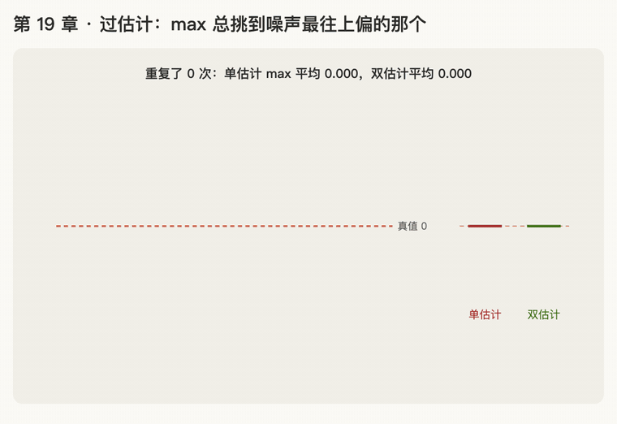

第 19 章 · 过估计与 Double DQN：max 会挑到"运气好"的那个
本章回答：Q-learning 和 DQN 学到的 Q 值为什么普遍偏高？"挑最大"这个动作本身有什么问题？用两个估计怎么修？
讲解日期：2026-11-13 · 上一章：第 18 章 DQN · 下一章：第 20 章 策略梯度与 REINFORCE
对应原文：Sutton & Barto §6.7 Maximization Bias and Double Learning（L9993–L10151，例 6.7 L10007，Double Q-learning 式 6.10 L10108）；CS 285 第 8 讲 Part 3（lec-08.txtL113–L134：Overestimation、Double Q-learning in practice）
本章缩写：Double DQN（DDQN）= Double Deep Q-Network（双 / 深度 Q 网络）；bias：偏差（平均来看偏离真值多少）；\(Q_1, Q_2\)：两个独立的估计。全部缩写见 附录 · 缩写与术语表
讲解
第一步：十个都一样好的动作，挑出来的"最大值"却偏高（2026-11-13）
一个思想实验：有 10 个动作，真实价值都是 0（哪个都一样）。但你不知道真值，只能各试 5 次、取平均当估计。每次试的结果有噪声（标准差 1）。
估计出来大概是这样（某一次）：
动作: 1 2 3 4 5 6 7 8 9 10
估计: -0.3 +0.5 -0.1 +0.8 -0.6 +0.2 -0.4 +0.1 +0.3 -0.2
每个估计都是"真值 0 + 一点噪声"，平均来看是准的：有的偏高有的偏低。
但 Q-learning 要的是 max：\(\max = +0.8\)。真实的最大值是 0，你却估成了 0.8。
问题出在哪：10 个估计里，总会有一两个运气好、噪声往上偏的；max 专门把"运气最好"的那个挑出来。所以 max 一次次地偏高，平均下来也偏高。用代码重复了 2 万次：
| 平均值 | |
|---|---|
| 真实的 \(\max_a q(a)\) | 0 |
| 估计的 \(\max_a Q(a)\) | 0.691 |
这叫最大化偏差 maximization bias（§6.7，L9993–L10006，"We call this maximization bias" L10006）：用"带噪声的估计的最大值"去估"真实值的最大值"，会系统性偏高。
类比：选秀。 10 个水平一样的选手，每人表演一次，评委按这一次的分数选冠军。冠军通常是"那天发挥最好"的人，他的分数比他真实水平高；你如果拿冠军的分数当"这群人的最高水平"，就会高估。
一句话：动作一样好时，max 会挑到噪声最往上偏的那个，所以"估计的最大值"系统性偏高（最大化偏差）。
第二步：在 Q-learning 里偏差会越滚越大（2026-11-13）
Q-learning / DQN 的目标里正好有 max（第 16、18 章）：
Q 在训练中一直有误差，max 就一直偏高；偏高的目标又被拿去更新前一个状态的 Q，前一个状态的 Q 也偏高；它又成为更前面状态的目标……偏差一步步往前传、往上叠。
CS 285 第 8 讲 L115–L120 展示了 DQN 在 Atari 游戏上的实验：网络估出来的 Q 值，比真正玩出来的回报高出一大截。
书里的例 6.7（L10007–L10075，图 6.5）：一个小 MDP，从 A 出发，往右直接结束（奖励 0）；往左到 B，B 有很多动作、每个奖励都是"平均 −0.1 的随机数"，然后结束。往左其实更差（平均 −0.1 < 0），但 Q-learning 因为在 B 处取 max 偏高，一开始大部分时间都选往左，要很久才纠正过来。
一句话：Q-learning 的目标里有 max，偏高的目标会传给前面的状态，偏差越滚越大；DQN 在 Atari 上的 Q 值明显高于真实回报。
第三步：挑选和打分分开：两个估计（2026-11-13）
问题的根源：用同一组估计，既去挑哪个动作最大，又用它来打分。运气好的那个被挑中，打分时又用了它运气好的分数。
修法：Double learning（L10076–L10108）：准备两组独立的估计 \(Q_1\)、\(Q_2\)（各自用不同的数据学出来，噪声互不相关）：
- 用 \(Q_1\) 挑：\(a^* = \arg\max_a Q_1(a)\)；
- 用 \(Q_2\) 打分：用 \(Q_2(a^*)\) 当这个动作的价值。
\(Q_1\) 挑中的那个动作，在 \(Q_1\) 里是"运气好"的；但 \(Q_2\) 的噪声和它无关，平均来看不偏不倚。
选秀类比：一组评委负责选出冠军，另一组评委重新打分。第二组不知道第一组看到的那次超常发挥，给出的分数更接近真实水平。
还是那个 10 个动作的实验，重复 2 万次：
| 做法 | 平均值 | 真值 |
|---|---|---|
| 同一组估计，挑 + 打分 | 0.691 | 0 |
| \(Q_1\) 挑，\(Q_2\) 打分 | −0.000 | 0 |
偏差没了。
Double Q-learning（式 6.10，L10108）：表格版每一步随机选一组来更新，比如更新 \(Q_1\) 时：
一句话：同一组估计既挑又打分才会偏高；一组挑、另一组打分，噪声不相关，偏差就消失了（Double learning）。
第四步：Double DQN：现成的两个网络（2026-11-13）
DQN 里本来就有两个网络（第 18 章）：主网络 θ 和目标网络 \(\theta^-\)。不用再加新网络，直接分工（lec-08.txt L121–L123，"Double Q-learning in practice"）：
| DQN | Double DQN | |
|---|---|---|
| 谁挑动作 | 目标网络 \(\theta^-\) | 主网络 θ |
| 谁打分 | 目标网络 \(\theta^-\) | 目标网络 \(\theta^-\) |
| 目标 y | \(r + \gamma\max_{a'}Q(s', a'; \theta^-)\) | \(r + \gamma\,Q\big(s', \arg\max_{a'}Q(s', a'; \theta); \theta^-\big)\) |
手算一个例子：r = 0，γ = 0.9，在 s' 处：
| 动作 | 1 | 2 | 3 |
|---|---|---|---|
| 主网络 θ 的输出 | 1.0 | 2.0 | 0.5 |
| 目标网络 \(\theta^-\) 的输出 | 1.2 | 0.7 | 1.5 |
- DQN：目标网络自己挑最大（动作 3，1.5）：\(y = 0.9 \times 1.5 = 1.35\)；
- Double DQN：主网络挑（动作 2），目标网络给动作 2 打分（0.7）：\(y = 0.9 \times 0.7 = 0.63\)。
两个网络"意见不一"时（主网络觉得 2 好，目标网络觉得 3 好），Double DQN 给出一个保守得多的目标。
改动只有一行代码，几乎没有额外计算，在 Atari 上明显减少了过估计、提高了分数。CS 285 HW3 §2.5 就要求在 DQN 上加上 Double DQN 并比较。
一句话：Double DQN = 主网络挑动作、目标网络打分；只改目标里的一行，例子里目标从 1.35 降到 0.63。
动画演示：十个动作的估计，max 总挑到最高的噪声

可交互版：animations/l19-double-dqn.html（要能点按钮、拖滑块，需要用本地服务打开，见 animations/README.md"跑起来看"）。
怎么看：
- 十根柱子是十个动作的估计（真值都是 0，虚线），每帧重新抽一次噪声；
- 红框是 \(Q_1\) 挑出的最大那根，右边记下它的值：这些点平均在 0.69 左右（第一步）；
- 绿点是用 \(Q_2\) 给同一个动作重新打分的值，平均贴着 0（第三步）；
- 滑块调动作个数：动作越多，max 偏得越高；调每个动作"试几次"：试得越多噪声越小，偏差也越小。
练习与作答记录
题 1：三个动作的真值都是 5，估计分别是 4.6、5.9、5.2。用"同一组估计取 max"估出的最大值是多少？偏了多少？
作答：（待作答）
题 2：主网络在 s' 的输出 [3, 1, 2]，目标网络 [1, 4, 2]，r = 1，γ = 0.5。分别算 DQN 和 Double DQN 的 y。
作答：（待作答）
题 3：用自己的话说：为什么"一组挑、另一组打分"就不偏了？
作答：（待作答）
口诀
十个一样好，max 挑到运气最好的那个，估计就偏高；
目标里有 max，偏高一步步往前传；
挑和打分分开：一组挑，另一组打分，噪声不相关就不偏；
Double DQN：主网络挑，目标网络打分，只改一行。
本章复习卡片
- R33（最大化偏差：\(\mathbb{E}[\max_a Q(a)] \ge \max_a q(a)\)；Double DQN 目标 \(r + \gamma Q(s', \arg\max_{a'}Q(s', a'; \theta); \theta^-)\)）
附录 · 延伸阅读
留给以后深入学习用，不影响本章主线。★ 是建议先读的。
推荐阅读
| 读什么 | 读哪里 | 读它为了什么 |
|---|---|---|
| ★ Sutton & Barto §6.7 | books/sutton-barto-RLbook2020.txt L9993–L10151（例 6.7 L10007，式 6.10 L10108） |
最大化偏差和 Double Q-learning 的原文 |
| ★ CS 285 第 8 讲 Part 3 | cs285-slides/lec-08.txt L113–L134 |
DQN 在 Atari 上的过估计实验图；Double Q-learning in practice |
| CS 285 第 8 讲 | lec-08.txt L134 之后 |
multi-step returns、连续动作的 Q-learning（接 SAC） |
| Rainbow 论文 | papers/rainbow-1710.02298.txt §2–§3 |
DQN 的六个改进合在一起：Double、Dueling、优先回放、多步、分布式、噪声网络 |
| TD3 论文 | papers/td3-1802.09477.txt §4 |
连续动作里的过估计：取两个 Q 的较小值（clipped double Q） |
| 王树森 slides | chinese/wangshusen-DRL/Slides/3_DQN_3.pdf |
中文：高估问题、Double DQN |
数学原理
- 为什么 max 偏高：max 是凸函数，由 Jensen 不等式（Jensen 是丹麦数学家的名字），\(\mathbb{E}[\max_a Q(a)] \ge \max_a \mathbb{E}[Q(a)] = \max_a q(a)\)；噪声越大、动作越多，差距越大。
- 10 个标准正态的最大值：每个估计是 5 次平均，标准差 \(1/\sqrt5 \approx 0.447\)；10 个标准正态最大值的期望约 1.54，乘 0.447 ≈ 0.69，和实验的 0.691 一致。
- Double 估计为什么无偏：\(Q_2\) 与 \(Q_1\) 独立，\(\mathbb{E}[Q_2(a^*) \mid a^*] = q(a^*)\)；当所有 q 相等时它就是 \(\max q\)。代价是可能低估（当 \(Q_1\) 挑错时）。
- TD3 的做法：目标里用 \(\min(Q_1, Q_2)\)，故意偏向低估，在连续控制里更稳。
公式清单
| 公式 | 意思 |
|---|---|
| \(\mathbb{E}[\max_a Q(a)] \ge \max_a q(a)\) | 最大化偏差 |
| \(a^* = \arg\max_a Q_1(a)\)，用 \(Q_2(a^*)\) | Double learning：一组挑、一组打分 |
| \(Q_1(S,A) \leftarrow Q_1 + \alpha[R + \gamma Q_2(S', \arg\max_a Q_1(S', a)) - Q_1]\) | Double Q-learning（式 6.10） |
| \(y = r + \gamma\,Q(s', \arg\max_{a'}Q(s', a'; \theta); \theta^-)\) | Double DQN 目标 |
代码对照：把本章的数字用代码算一遍
代码在
cs285-deep-rl/solutions/chapter-code/ch19_double_dqn.py，测试tests/test_ch17_24.py。
同一章的 Jupyter notebook：cs285-deep-rl/solutions/chapter-code/notebooks/ch19_double_dqn.ipynb（讲解和代码放在一起，一格一格边读边跑；代码都写在格子里，Colab 也能直接打开）。
bash cd cs285-deep-rl/solutions/chapter-code uv run python ch19_double_dqn.py
| 讲义 | 代码 | 跑出来 |
|---|---|---|
| 10 个动作重复 2 万次 | max_bias() |
单估计 0.691，双估计 −0.000 |
| 手算一步 | targets(0.0, 0.9, [1.0, 2.0, 0.5], [1.2, 0.7, 1.5]) |
DQN 1.35，Double DQN 0.63 |
关键几行：
single.append(Q1.max()) # 同一组估计既挑又打分
double.append(Q2[np.argmax(Q1)]) # Q1 挑动作，Q2 打分
代码里才看得到的：在第 18 章的 DQN 代码里改成 Double DQN，只要把 target(NS).max(dim=1).values 换成 target(NS).gather(1, q(NS).argmax(dim=1, keepdim=True)).squeeze(1)：用主网络 q 的 argmax 去目标网络 target 里取值。
自己改一改（不影响练习答案）：
- 换动作个数：
max_bias(n_actions=2 / 10 / 100)→ 单估计偏 0.254、0.691、1.121，双估计都在 0 附近。动作越多，挑出来的最大值偏得越高。 - 换每个估计用的样本数：
n_samples=1→ 偏 1.546；n_samples=50→ 偏 0.217。估计越准，偏差越小，但不会消失。